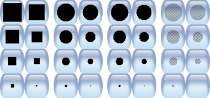

version 0.9.35
Ett enkelt ritprogram för barn
Copyright © 2002-2025 av olika bidragsgivare; se AUTHORS.txt.
https://tuxpaint.org/
maj 26, 2025
| Innehåll |
|---|
Copyright © 2002-2025 av olika bidragsgivare; se AUTHORS.txt.
https://tuxpaint.org/
maj 26, 2025
| Innehåll |
|---|
Rita med Tux är ett gratis ritprogram som är utformat för små barn (från 3 år och uppåt). Det har ett enkelt och lättanvänt gränssnitt, roliga ljudeffekter och en uppmuntrande tecknad maskot som hjälper barnen att använda programmet. Det ger en tom duk och en mängd olika ritverktyg för att hjälpa ditt barn att vara kreativt.
Rita med Tux är ett Open Source-projekt, fri programvara som släpps under GNU General Public License (GPL). Det är gratis, och "källkoden" bakom programmet är tillgänglig. (Detta gör att andra kan lägga till funktioner, fixa buggar och använda delar av programmet i sin egen GPL-programvara)
Se COPYING.txt för den fullständiga texten till GPL-licensen.
Se CHANGES.txt för en fullständig lista över ändringar.
Rita med Tux borde ha placerat en startikon i dina KDE- och/eller GNOME-menyer, under "Graphics"
Alternativt kan du köra följande kommando i en shell-prompt (t.ex."$"):
$ tuxpaint
Om något fel uppstår visas det på terminalen (till STDERR).
|
Tux Paint |
Om du har installerat Rita med Tux på din dator med hjälp av "Rita med Tux Installer", har du fått frågan om du vill ha en genväg till Start-menyn och/eller en genväg till skrivbordet. Om du samtyckte kan du helt enkelt köra Rita med Tux från avsnittet "Rita med Tux" i Start-menyn (t.ex. under "Alla program") eller genom att dubbelklicka på ikonen "Rita med Tux" på skrivbordet, om du fick installationsprogrammet att placera en ikon där.
Om du använder den "bärbara" (ZIP-fil) versionen av Rita med Tux, eller om du använde "Rita med Tux Installer" men valde att inte ha genvägar installerade, måste du dubbelklicka på ikonen "tuxpaint.exe" i mappen "Tux Paint" på din dator.
Som standard kommer "Rita med Tux Installer" att placera Rita med Tuxs mapp i C:\Programfiler\TuxPaint\"
Om du använde nedladdningen av ZIP-filen kommer Rita med Tux-mappen att finnas där du extraherade innehållet i ZIP-filen.
Dubbelklicka bara på ikonen "Tux Paint".
![[Titelskärm]](../../html/images/tuxpaint-title.jpg)
När Rita med Tux laddas första gången visas en titel- och kreditskärm.
När laddningen är klar trycker du på en tangent eller klickar eller trycker på i Rita med Tux-fönstret för att fortsätta. (Eller så försvinner titelskärmen automatiskt efter ca 5 sekunder)
Huvudskärmen är indelad i följande avsnitt:
![[Verktyg: Färg, Stämpel, Linjer, Former, Text, Magi, Etikett, Ångra, Gör om, Sudda, Ny, Öppna, Spara, Skriv ut, Avsluta]](../../html/images/tools.jpg)
Verktygsfältet innehåller rit- och redigeringskontroller.
![[Målarduk]](../../html/images/canvas.jpg)
Den största delen av skärmen, i mitten, är teckningsytan. Det är naturligtvis här du ritar!
💡 Observera: Storleken på ritytan beror på storleken på Rita med Tux. Du kan ändra storleken på Rita med Tux med hjälp av konfigurationsverktyget Konfigurera Rita med Tux. eller på annat sätt. Se avsnittet Alternativ dokumentationen för mer information.
![[Väljare - penslar, bokstäver, former, stämplar]](../../html/images/selector.jpg)
Väljaren visar olika saker beroende på vilket verktyg som används. När du t.ex. väljer verktyget Paint Brush eller Line visas de olika penslar som finns tillgängliga. När verktyget Rubber Stamp är markerat visas de olika formerna som du kan använda. När text- eller etikettverktyget är markerat visas olika teckensnitt.
![[Färger - Svart, vit, röd, rosa, orange, gul, grön, cyan, blå, lila, brun, grå]](../../html/images/colors.jpg)
När det aktiva verktyget har stöd för färger visas en palett med färgval längst ned på skärmen. Klicka på en färg för att välja den, så kommer den att användas av det aktiva verktyget. (Till exempel kommer verktyget "Paint" att använda den som färg för att rita med den valda penseln, och verktyget "Fill" kommer att använda den som färg för att fylla ut ett område i bilden)
Längst till höger finns tre speciella färgalternativ:


⌨ När det aktiva verktyget har stöd för färger kan en genväg användas för snabb åtkomst till alternativet "färgväljare". Håll ned [Kontroll]-tangenten medan du klickar, så visas färgen under muspekaren längst ned. Du kan dra runt på duken för att hitta den färg du vill ha. När du släpper musknappen kommer färgen under markören att väljas. Om du släpper musen utanför målarduken (t.ex. över området "Tools") kommer färgvalet att lämnas oförändrat. (Detta liknar att klicka på "Tillbaka"-knappen som finns tillgänglig när man tar fram alternativet "färgväljare" via dess knapp i färgpaletten)
⚙ Obs: Du kan definiera dina egna färger för Rita med Tux. Se avsnittet "Alternativ" dokumentation.

Längst ned på skärmen ger Tux, Linux-pingvinen, tips och annan information medan du använder Rita med Tux.
Med verktyget Paint Brush kan du rita på fri hand med hjälp av olika penslar (väljs i väljaren till höger) och färger (väljs i färgpaletten längst ned).
Om du håller musknappen nedtryckt och rör musen, kommer den att rita när du rör dig.
Vissa penslar är animerade - de ändrar form när du ritar dem. Ett bra exempel på detta är vinranksborsten som medföljer Rita med Tux. Dessa penslar har en liten "filmstrip"-ikon ritad på sina Selector-knappar.
Andra penslar är riktade - de ritar en annan form beroende på i vilken riktning du målar med dem. Ett exempel på detta är pilborsten som medföljer Rita med Tux. Dessa penslar har en liten 8-vägs pilikon ritad på sina Selector-knappar.
Slutligen kan vissa penslar vara både riktade och animerade. Exempel på detta är katt- och ekorrborstarna som medföljer Rita med Tux. Dessa penslar har både ikonerna "filmstrip" och 8-vägspil.
När du ritar spelas ett ljud upp. Ju större pensel, desto lägre tonläge.

Avståndet mellan varje position där en pensel appliceras på målarduken kan variera. Vissa penslar (t.ex. fotavtryck och blommor) är som standard placerade tillräckligt långt ifrån varandra för att inte överlappa varandra. Andra penslar (t.ex. de grundläggande cirkelformade penslarna) ligger nära varandra så att de bildar ett sammanhängande streck.
Standardavståndet mellan penslarna kan ändras genom att klicka i den triangelformade serien av staplar längst ned till höger; ju större stapel, desto större avstånd. Penselavståndet påverkar båda verktygen som använder penslarna: "Paint"-verktyget och "Lines"-verktyget.

⚙ Obs: Om alternativet "
nobrushspacing" är inställt kommer Rita med Tux inte att visa kontrollerna för penselavstånd. Se avsnittet "Alternativ" dokumentationen.
Stämpelverktyget är som en uppsättning gummistämplar eller klistermärken. Med det kan du klistra in förritade eller fotografiska bilder (t.ex. en bild av en häst, ett träd eller månen) i din bild.
När du flyttar musen runt på duken följer en kontur musen och visar var stämpeln kommer att placeras och hur stor den kommer att bli. Klicka på den yta där du vill placera stämpeln.

Med hjälp av växlingsknappen för rotation längst ned till höger kan du aktivera ett rotationssteg när du placerar ut stämplar. När du har placerat stämpeln väljer du vinkeln för att rotera den genom att flytta musen runt på duken. Klicka på musknappen igen så läggs stämpeln till i ritningen.
⚙ Obs: Om alternativet "stämpelrotation" är inaktiverat kommer stämpeln att ritas på duken när du släpper musknappen. (Det finns inget rotationssteg.) Se avsnittet "Alternativ" om du vill veta mer om alternativet "stämpelrotation" ("stamprotation").
📜 Obs: Funktionen för frimärksrotation lades till i Rita med Tux i version 0.9.29.

Innan du "stämplar" en bild på din ritning kan du ibland använda olika effekter (beroende på stämpel):
⚙ Obs: Om alternativet "nostampcontrols" är inställt kommer Rita med Tux inte att visa kontrollerna för rotation, spegling, vändning eller storlek för stämplar. Se avsnittet "Alternativ" dokumentationen.
Olika stämplar kan ha olika ljudeffekter och/eller beskrivande (talade) ljud. Med hjälp av knapparna i hjälpområdet längst ned till vänster (nära Linux-pingvinen Tux) kan du spela upp ljudeffekterna och de beskrivande ljuden för den aktuella stämpeln.
Med detta verktyg kan du rita raka linjer med hjälp av de olika penslar och färger som du normalt använder med Paint Brush.
Klicka på musen och håll den intryckt för att välja linjens startpunkt. När du flyttar runt musen kommer en tunn "gummibandslinje" att visa var linjen ska dras. Längst ned ser du linjens vinkel i grader. En linje som går rakt åt höger är 0°, en linje som går rakt uppåt är 90°, en linje som går rakt åt vänster är 180°, en linje som går rakt nedåt är 270°, och så vidare.
Släpp musen för att slutföra linjen. Ett "sproing!"-ljud spelas upp.
Vissa penslar är animerade och visar ett mönster av former längs linjen. Andra är riktade och visar en annan form beroende på vinkeln på penseln. Och slutligen finns det några som är både animerade och riktade. Se "Måla" ovan om du vill veta mer.
Olika penslar har olika avstånd, vilket ger antingen en serie enskilda former eller ett kontinuerligt streck av penselformen. Penselavståndet kan justeras. Se avsnittet om penselavstånd i verktyget "Paint" ovan för mer information.

Med detta verktyg kan du rita några enkla fyllda och ofyllda former.
Välj en form i väljaren till höger (cirkel, kvadrat, oval etc.).
Använd alternativen längst ned till höger för att välja hur formverktyget ska fungera:
📜 Detta var det enda beteendet hos Rita med Tux i version 0.9.24)
📜 Detta alternativ lades till från och med Rita med Tux version 0.9.25.
⚙ Obs: Om formkontrollerna är inaktiverade (t.ex. med alternativet "noshapecontrols") visas inte kontrollerna och metoden "former från mitten" används.
Klicka på musen i målarduken och håll den intryckt för att sträcka ut formen från den plats där du klickade. Vissa former kan ändra proportion (t.ex. rektangel och oval kan vara bredare än höga eller högre än breda), andra kan inte det (t.ex. kvadrat och cirkel).
För former som kan ändra proportion visas formens bildförhållande längst ned. Till exempel: "1:1" visas om den är "kvadratisk" (lika lång som bred); "2:1" om den antingen är dubbelt så bred som den är lång eller dubbelt så lång som den är bred; och så vidare.
Släpp musen när du har stretchat färdigt.
Nu kan du flytta musen runt på duken för att rotera formen. Den vinkel som formen roteras i visas längst ned i grader (på samma sätt som med verktyget "Lines", som beskrivs ovan).
Klicka på musknappen igen så ritas formen i den aktuella färgen.
⚙ Se avsnittet "Alternativ" om du vill veta mer om alternativet "enkla former" ("simpleshapes").

Välj ett teckensnitt (från "Letters" som finns till höger) och en färg (från färgpaletten längst ned). Du kan också lägga till en fet och/eller kursiv stil på texten. Klicka på skärmen så kommer en markör att visas. Skriv in text så visas den på skärmen. (Du kan ändra teckensnitt, färg och styling medan du skriver in texten, innan den appliceras på duken)
Tryck på [Enter] eller [Återgå] så ritas texten på bilden och markören flyttas en rad nedåt.
Alternativt kan du trycka på [Flik] så ritas texten på bilden, men markören flyttas till höger om texten, i stället för nedåt på en rad, och till vänster. (Detta kan vara användbart för att skapa en textrad med blandade färger, typsnitt, stilar och storlekar)
Text från urklipp (copy/paste-buffert) kan infogas med verktygen "Text" och "Etikett" genom att trycka på tangentkombinationen [Control] + [V] på ett fysiskt tangentbord eller klicka på knappen "Paste" i Rita med Tuxs skärmtangentbord. Om texten överskrider den högra kanten på målarduken bryts den till en ny textrad (och går tillbaka till föregående mellanslag eller bindestreck ('-') om möjligt). Om texten når botten av duken avbryts klistringen och texten trunkeras.
Om du klickar någon annanstans i bilden medan textinmatningen fortfarande är aktiv flyttas den aktuella textraden till den platsen (där du kan fortsätta att redigera den).

Textverktyget är det ursprungliga verktyget för textinmatning i Rita med Tux. Text som skrivs in med detta verktyg kan inte ändras eller flyttas senare, eftersom den blir en del av teckningen. Men eftersom texten blir en del av bilden kan den ritas över eller ändras med hjälp av Magic Tool-effekter (t.ex. kladdig, tonad, präglad etc.)
När du använder verktyget Label (som lades till i Rita med Tux i version 0.9.22) "flyter" texten över bilden och detaljerna i etiketten (texten, etikettens position, teckensnitt och färg) lagras separat. Detta gör att etiketten kan flyttas eller redigeras senare.
Om du vill redigera en etikett klickar du på knappen för etikettval. Alla etiketter i ritningen visas markerade. Klicka på en - eller använd tangenten [Flik] för att bläddra igenom alla etiketter och tangenten [Enter] eller [Återgå] för att välja en - så kan du redigera etiketten. (Använd [Backsteg]-tangenten för att radera tecken och andra tangenter för att lägga till text i etiketten; klicka i målarduken för att flytta etiketten; klicka i paletten för att ändra färg på texten i etiketten; etc.)
Du kan "applicera" en etikett på duken och måla in texten i bilden som om den hade lagts till med hjälp av textverktyget genom att klicka på knappen för etikettapplicering. (Denna funktion lades till i Rita med Tux version 0.9.28.) Alla etiketter i bilden markeras och du väljer en etikett på samma sätt som när du väljer en etikett att redigera. Den valda etiketten tas bort och texten läggs till direkt på duken.
⚙ Etikettverktyget kan inaktiveras (t.ex. genom att välja "Disable 'Label' Tool" i Konfigurera Rita med Tux. eller köra Rita med Tux med alternativet "nolabel").
📜 Möjligheten att klistra in text från urklippet lades till i Rita med Tux 0.9.35
Rita med Tux tillåter inmatning av tecken på olika språk. De flesta latinska tecken(A-Z, ñ, è, etc.) kan skrivas in direkt. Vissa språk kräver att Rita med Tux växlas till ett alternativt inmatningsläge innan inmatning, och vissa tecken måste komponeras med hjälp av flera tangenttryckningar.
När Rita med Tux är inställt på ett av de språk som har alternativa inmatningslägen används en tangent för att växla mellan normala (latinska tecken) och lokalspecifika lägen.
Nedan visas de lokala språk som stöds för närvarande, tillgängliga inmatningsmetoder och tangenter för att växla eller växla mellan olika lägen.
[Alt]-knapp eller vänster [Alt]-knapp [Alt]-knapp eller vänster [Alt]-knapp [Alt]-knapp eller vänster [Alt]-knapp [Alt]-knapp 💡 Observera: Många teckensnitt innehåller inte alla tecken för alla språk, så ibland måste du byta teckensnitt för att se de tecken du försöker skriva.
Ett valfritt skärmtangentbord finns tillgängligt för verktygen Text och Etikett, vilket kan ge en mängd olika layouter och teckensammansättningar (t.ex. sammansättning av "a" och "e" till "æ"). Kör Rita med Tux med alternativet "--onscreen-keyboard", eller aktivera den inställningen i Rita med Tux's konfigurationsfil, för att aktivera det. Flera layouter erbjuds (för närvarande "QWERTY" och "ABC"), som användaren kan växla mellan. Ytterligare konfigurationsalternativ gör det möjligt att ange en standardlayout samt att förhindra att layouten ändras.
Skärmtangentbordet visas längst ner eller längst upp i Rita med Tux-fönstret och skymmer en del av arbetsytan, beroende på var markören för textinmatning är placerad. Förutom alfabetiska och numeriska tangenter samt vissa skiljetecken har tangentbordet följande funktioner:
⚙ Se avsnittet "Alternativ" och "Utökning av Rita med Tux" för mer information.
Verktyget "Fill" fyller ett sammanhängande område i din ritning med en valfri färg. Tre fyllningsalternativ erbjuds:
📜 Obs: Före Rita med Tux 0.9.24 var "Fill" ett magiskt verktyg (se nedan). Före Rita med Tux 0.9.26 erbjöd verktyget "Fill" endast fyllningsmetoden "Solid". "Shaped" fill introducerades i Rita med Tux 0.9.29.
Det magiska verktyget är egentligen en uppsättning specialverktyg. Välj en av de "magiska" effekterna i väljaren till höger. Sedan kan du, beroende på verktyget, antingen klicka och dra runt bilden och/eller bara klicka på bilden en gång för att tillämpa effekten.
MagiverktygMagiska kontrollerSe instruktionerna för varje Magic-verktyg (i mappen "magic-docs").
Magisk storlekOm verktyget kan användas genom att klicka och dra kommer en "painting"-knapp att finnas till vänster, under listan med Magic-verktyg på höger sida av skärmen. Om verktyget kan påverka hela bilden på en gång finns en "hela bilden"-knapp till höger.

⚙ Obs: Om alternativet "
nomagiccontrols" är inställt kommer Rita med Tux inte att visa målningen eller hela bildkontrollerna. Se avsnittet "Alternativ" dokumentationen.💡 Om de magiska kontrollerna är inaktiverade kan Magic plugin göra separata verktyg tillgängliga, ett för målning och ett som påverkar hela bilden.
Vissa verktyg erbjuder olika storleksalternativ. Om så är fallet visas ett reglage längst ned till höger på skärmen. Detta kan påverka radien för en specialeffekt (t.ex. Darken) eller ett målat objekt (t.ex. Patterns), eller andra attribut (t.ex. stora kontra små tegelstenar).
⚙ Obs: Om alternativet "
nomagicsizes" är inställt kommer Rita med Tux inte att visa storlekskontrollerna. Se avsnittet "Alternativ" dokumentationen.💡 Om storleksalternativet är inaktiverat kan Magic-pluginet helt enkelt erbjuda en standardstorlek (t.ex. Patterns), eller så kan det göra separata verktyg tillgängliga med olika förinställda storlekar (t.ex. Bricks och Googly Eyes).
📜 Detta alternativ lades till från och med Rita med Tux version 0.9.30.
⚙ Obs: Om alternativet "ungroupmagictools" är inställt kommer Rita med Tux inte att dela upp Magic-verktygen i grupper av relaterade verktyg, utan istället presentera dem alla som en enda stor lista. Se avsnittet "Alternativ" dokumentationen.
Detta verktyg fungerar på samma sätt som en målarpensel. Var du än klickar (eller klickar och drar) raderas det som du har lagt till i din ritning, så att du får fram den bakgrund som du valde när du började rita, oavsett om det är en enfärgad bild, bakgrunden till en "Startbild"-bild eller en "Template"-bild. (Se Tillgängliga verktyg > Övriga kontroller > "Nytt" kommando.)
 Ett antal olika typer av suddgummin finns tillgängliga, var och en med flera storlekar:
När du flyttar musen följer en kontur pekaren och visar vilken del av bilden som ska raderas.
När du raderar spelas ett "pipigt rent" radergummitorkningsljud upp.
⌨ Håll ned [X]-tangenten medan du klickar för att snabbt få tillgång till ett litet, vasst, runt suddgummi (inte tillgängligt när verktygen Text eller Etikett är valda, när du håller på att rotera en stämpel eller form eller när du använder ett interaktivt magiskt verktyg). Släpp musen för att återgå till det aktuella verktyget.
Genom att klicka på knappen "Undo" ångrar (återställer) du den senaste ritningen. Du kan till och med ångra mer än en gång!
⌨ Du kan också trycka på [Kontroll / ⌘] + [Z] på tangentbordet för att komma till Ångra.
Om du klickar på knappen "Redo" görs den ritningsåtgärd om som du just avbröt med kommandot "Undo".
Så länge du inte drar igen kan du göra om lika många gånger som du hade ogjort!
⌨ Du kan också trycka på [Kontroll / ⌘] + [R] på tangentbordet för att komma till Gör om.
Genom att klicka på knappen "New" startar du en ny teckning. En dialogruta visas där du kan välja att starta en ny bild med en enfärgad bakgrundsfärg eller med en "Startbild"- eller "Template"-bild(se nedan). Du kommer först att få frågan om du verkligen vill göra detta.
När du använder verktyget "Eraser" tas det som du har lagt till i din teckning bort, så att den bakgrund du valde när du började rita en ny teckning framträder. (Se Tillgängliga verktyg > Verktyg för ritning > Verktyget "Sudda".)
⌨ Du kan också trycka på [Kontroll / ⌘] + [N] på tangentbordet för att komma till starta en ny ritning.
När du använder verktyget "Eraser" eller "Eraser"-läget i verktyget "Fill" kommer originalbilden från "Startbild" eller "Template" att visas igen. (Se Tillgängliga verktyg > Verktyg för ritning > Verktyget "Sudda" och "Fyll"-verktyget.)
De magiska verktygen "Flip" och "Mirror" påverkar också orienteringen av "Startbild" eller "Template". (Se Tillgängliga verktyg > "Magiskt" verktyg (specialeffekter) > Vänd och Spegel.)
När du laddar en "Startbild" eller "Template", ritar på den och sedan klickar på "Save" skapas en ny bildfil - originalet skrivs inte över, så du kan använda den igen senare (genom att öppna den från dialogrutan "New").
⚙ Du kan skapa dina egna "Startbild"- och mallbilder. Se avsnitten om " Startbild " och " Templates" i dokumentationen Extending Rita med Tux.
💡 Du kan också konvertera dina sparade ritningar till mallar direkt i Rita med Tux, från dialogrutan "Öppna". Se "Öppna" nedan.
Om du har valt en mall i din personliga mallmapp och den skapades i Rita med Tux (med hjälp av knappen "Mall" i dialogrutan " Öppna" ), kan du ta bort den från Rita med Tux också. En "Erase"-knapp (papperskorg) visas längst ned till höger i listan. Klicka på den för att radera den valda mallen. (Du kommer att bli ombedd att bekräfta)
💡 Obs: På Linux, Windows och macOS kommer bilden att placeras i skrivbordets papperskorg (där du kan återställa den om du ändrar dig).
⚙ Obs: " Erase"-knappen kan avaktiveras via alternativet "noerase".
⚙ Obs: De solida färgerna kan placeras i slutet av dialogrutan "Ny" (under Start och Mallar) med hjälp av alternativet "newcolorslast".
Här visas en lista över alla bilder som du har sparat. Om det finns fler bilder än vad som ryms på skärmen kan du använda upp- och nedpilarna längst upp och längst ned i listan för att bläddra igenom listan med bilder.

Klicka på en bild för att markera den, och sedan...
Klicka på den gröna "Öppna"-knappen längst ned till vänster i listan för att ladda den valda bilden. Du kommer sedan att kunna redigera den.
(Alternativt kan du dubbelklicka på ikonen för en bild för att ladda den)
💡 Om du väljer att öppna en bild och din nuvarande teckning inte har sparats, kommer du att få frågan om du vill spara den eller inte. (Se "Spara" nedan.)
Klicka på den bruna "Erase"-knappen (papperskorgen) längst ned till höger i listan för att radera den valda bilden. (Du kommer att bli ombedd att bekräfta.)
📜 Obs: På Linux (från och med version 0.9.22), Windows (från och med version 0.9.27) och macOS (från och med version 0.9.29) placeras bilden i skrivbordets papperskorg (där du kan återställa den om du ändrar dig).
⚙ Obs: " Erase"-knappen kan avaktiveras via alternativet "noerase".
Klicka på "Export"-knappen längst ned till höger för att exportera den valda bilden till din exportmapp. (t.ex. "~/Pictures/TuxPaint/")
Från skärmen "Öppna" kan du också:
Klicka på den blå knappen "Slides" (bildprojektor) längst ned till vänster för att gå till bildspelsläge. Se "Diabilder" nedan för mer information.
Klicka på den blå "Template"-knappen längst ned till vänster för att konvertera den valda bilden till en ny mall, som kan användas som underlag för nya ritningar.
📜 Obs: Funktionen för att skapa mallar lades till i Rita med Tux i version 0.9.31. För att lära dig hur du skapar mallar utanför Rita med Tux, se Utöka Rita med Tux
⚙ Funktionen för att skapa mallar kan avaktiveras (t.ex. genom att välja "Disable 'Make Template'" i Konfigurera Rita med Tux. eller köra Rita med Tux med alternativet "notemplateexport").
Klicka på den röda "Tillbaka"-pilen längst ned till höger i listan för att avbryta och återgå till den bild du höll på att rita.
⌨ Du kan också trycka på [Kontroll / ⌘] + [O] på tangentbordet för att komma till ta fram dialogrutan "Öppna.
Detta sparar din aktuella bild.
Om du inte har sparat den tidigare skapas en ny post i listan över sparade bilder. (d.v.s. det kommer att skapas en ny fil)
💡 Observera: Du kommer inte att bli tillfrågad om något (t.ex. ett filnamn). Bilden sparas helt enkelt och en ljudeffekt av typen "kameraslutare" spelas upp.
Om du har sparat bilden tidigare, eller om det är en bild som du just har laddat med kommandot "Open", får du först frågan om du vill spara över den gamla versionen eller skapa en ny post (en ny fil).

⚙ Obs: Om alternativen "saveover" eller "saveovernew" är inställda kommer det inte att fråga innan du sparar över. Se avsnittet "Alternativ" dokumentationen.
⌨ Du kan också trycka på [Kontroll / ⌘] + [S] på tangentbordet för att komma till sparat.
Klicka på den här knappen så kommer din bild att skrivas ut!
På de flesta plattformar kan du också hålla ned [Alt]-tangenten (kallas [Alternativ] på Mac-datorer) medan du klickar på knappen "Skriv ut" för att få en skrivardialog. Observera att detta kanske inte fungerar om du kör Rita med Tux i helskärmsläge. Se nedan.
Alternativet "noprint" kan ställas in, vilket kommer att inaktivera Rita med Tux's "Print" -knapp.
⚙ Se avsnittet "Alternativ" dokumentation.
Alternativet "printdelay" kan ställas in, vilket endast tillåter enstaka utskrifter - en gång varannan sekund, enligt din konfiguration.
Med "printdelay=60" i Rita med Tuxs konfigurationsfil kan utskriften t.ex. bara ske en gång per minut (60 sekunder).
⚙ Se avsnittet "Alternativ" dokumentation.
(endast Linux och Unix)
Rita med Tux skriver ut genom att generera en PostScript-representation av teckningen och skicka den till ett externt program. Som standard är programmet:
lpr
Detta kommando kan ändras genom att ställa in ett "printcommand"-alternativ i Rita med Tuxs konfigurationsfil.
Ett alternativt utskriftskommando kan aktiveras genom att hålla ned tangenten "[Alt]" på tangentbordet samtidigt som du klickar på knappen "Skriv ut", så länge du inte är i helskärmsläge körs ett alternativt program. Som standard är programmet KDE:s grafiska utskriftsdialog:
kprinter
Detta kommando kan ändras genom att ställa in ett "altprintcommand"-alternativ i Rita med Tuxs konfigurationsfil.
⚙ Se avsnittet "Alternativ" dokumentation.
(Windows och macOS)
Som standard skriver Rita med Tux helt enkelt ut till standardskrivaren med standardinställningar när du trycker på knappen "Skriv ut".
Men om du håller ned tangenten [Alt] (eller [Alternativ]) på tangentbordet medan du klickar på knappen "Skriv ut", så länge du inte är i helskärmsläge, visas operativsystemets skrivardialog där du kan ändra inställningarna.
Du kan lagra ändringarna i skrivarens konfiguration mellan Rita med Tux-sessionerna genom att ställa in alternativet "printcfg".
Om alternativet "printcfg" används kommer skrivarinställningarna att hämtas från filen "printcfg.cfg" i din personliga mapp (se nedan). Eventuella ändringar sparas även där.
⚙ Se avsnittet "Alternativ" dokumentation.
Som standard visar Rita med Tux bara skrivardialogen (eller, under Linux/Unix, kör "altprintcommand"; t.ex. "kprinter" i stället för "lpr") om tangenten [Alt] (eller [Alternativ]) hålls nedtryckt medan du klickar på knappen "Skriv ut".
Detta beteende kan dock ändras. Du kan få skrivardialogen att alltid visas genom att använda "--altprintalways" på kommandoraden eller "altprint=always" i Rita med Tuxs konfigurationsfil. Omvänt kan du förhindra att tangenterna [Alt]/[Alternativ] har någon effekt genom att använda "--altprintnever" eller "altprint=never".
⚙ Se avsnittet "Alternativ" dokumentation.
Knappen "Slides" finns tillgänglig i dialogrutan "Open". Den kan användas för att spela upp en enkel animation i Rita med Tux eller ett bildspel med bilder. Den kan också exportera en animerad GIF baserad på de valda bilderna.
När du går in i avsnittet "Slides" i Rita med Tux visas en lista över dina sparade filer, precis som i dialogrutan "Öppna".
Klicka på de bilder som du vill visa i en bildspelsliknande presentation, en efter en. En siffra visas över varje bild, så att du vet i vilken ordning de kommer att visas.
Du kan klicka på en markerad bild för att avmarkera den (ta bort den från bildspelet). Klicka på den igen om du vill lägga till den i slutet av listan.
En glidande skala längst ner till vänster på skärmen (bredvid knappen "Spela upp") kan användas för att justera hastigheten på bildspelet eller den animerade GIF:en, från långsammast till snabbast. Välj inställningen längst till vänster för att inaktivera automatisk framflyttning under uppspelning i Rita med Tux - du måste trycka på en tangent eller klicka för att gå till nästa bild (se nedan).
💡 Obs: Den långsammaste inställningen gör att du inte automatiskt avancerar genom bilderna. Använd den när du vill gå igenom dem manuellt. (Detta gäller inte för en exporterad animerad GIF)
Om du vill spela upp ett bildspel i Rita med Tux klickar du på knappen "Spela upp".
💡 Obs: Om du inte har valt några bilder kommer alla dina sparade bilder att spelas upp i bildspelet!
Under bildspelet kan du trycka på [Mellanslag], [Enter], [Återgå] eller [Pil höger] - eller klicka på knappen "Nästa" längst ned till vänster - för att manuellt gå vidare till nästa bild. Tryck på [Vänster pil] för att gå tillbaka till föregående bild.
Tryck på [Avsluta meny] eller klicka på "Tillbaka"-knappen längst ned till höger för att avsluta bildspelet och återgå till skärmen för val av bild i bildspelet.
 Klicka på knappen "GIF Export" längst ned till höger för att låta Rita med Tux generera en animerad GIF-fil baserat på de valda bilderna.
Klicka på knappen "GIF Export" längst ned till höger för att låta Rita med Tux generera en animerad GIF-fil baserat på de valda bilderna.
💡 Obs: Minst två bilder måste väljas. (Om du vill exportera en enda bild använder du alternativet "Exportera" i huvuddialogen "Öppna") Om inga bilder väljs kommer Rita med Tux inte att försöka generera en GIF baserad på alla sparade bilder.
Om du trycker på [Avsluta meny] under exportprocessen avbryts processen och du kommer tillbaka till dialogrutan "Bildspel".
Klicka på "Tillbaka" på skärmen för val av bild i bildspelet för att återgå till dialogrutan "Öppna".
Klicka på knappen "Avsluta", stäng fönstret Rita med Tux eller tryck på tangenten [Avsluta meny] för att avsluta Rita med Tux.
Du kommer först att få frågan om du verkligen vill sluta.
Om du väljer att avsluta och inte har sparat den aktuella bilden, får du först frågan om du vill spara den. Om det inte är en ny bild kommer du att få frågan om du vill spara över den gamla versionen eller skapa en ny post. (Se "Spara" ovan.)
⚙ Obs: Om bilden sparas kommer den att laddas om automatiskt nästa gång du kör Rita med Tux - om inte alternativet "startblank" är inställt.
⚙ Obs: Knappen "Avsluta" i Rita med Tux och avslutning via [Avsluta meny] kan inaktiveras via alternativet "noquit".
I så fall kan knappen "Stäng fönster" på Rita med Tuxs titelrad (om den inte är i helskärmsläge) eller tangentsekvensen [Alt] + [F4] användas för att avsluta.
Om inget av detta är möjligt kan tangentsekvensen [Skift] + [Kontroll / ⌘] + [Avsluta meny] användas för att avsluta.
⚙ Se avsnittet "Alternativ" dokumentation.
För närvarande finns det ingen kontrollknapp på skärmen, men med hjälp av tangentbordssekvensen [Alt] + [S] kan ljudeffekterna stängas av och aktiveras igen (dämpas och återställas) medan programmet körs.
Observera att om ljudet är helt avaktiverat med alternativet "nosound" har tangentkombinationen [Alt] + [S] ingen effekt. (dvs. den kan inte användas för att sätta på ljud när föräldern/läraren vill att de ska vara avstängda)
⚙ Se avsnittet "Alternativ" dokumentation.
Rita med Tux fungerar huvudsakligen via en enhet som i ditt operativsystem ser ut som en mus, inklusive vanliga möss, styrkulor och trackpads, samt ritplattor (som vanligtvis används med en penna) och pekskärmar (som används med ett finger och/eller en penna) (se "Använda en surfplatta eller pekskärm" nedan för mer information).
För att rita och styra Rita med Tux används endast en enda musknapp - på möss med flera knappar är det vanligtvis den vänstra musknappen, men detta kan vanligtvis konfigureras på operativsystemnivå. Som standard ignorerar Rita med Tux indata från den eller de andra knapparna. Om en användare försöker använda de andra knapparna visas en popup-dialogruta som påminner om att Rita med Tux bara känner igen en knapp. Du kan dock konfigurera Rita med Tux så att alla knappar accepteras som indata (se dokumentationen Options ).
Många inmatningsenheter erbjuder ett sätt att snabbt skrolla inom program - många möss har ett skrollhjul, styrkulor har skrollringar och styrplattor känner igen vissa "skroll"-gester (t.ex. vertikal rörelse med två fingrar eller vertikal rörelse på kanten av styrplattan). Rita med Tux stöder rullningsinmatning för att möjliggöra snabb rullning genom vissa listor (t.ex. stämplar, magiska verktyg och dialogrutorna Ny och Öppna).
Rita med Tux rullar också automatiskt om du klickar och håller musen nere på en rullningsknapp - pilknapparna "upp" och "ner" som visas ovanför och under rullningslistor.
Andra enheter som ser ut som en mus kan användas för att styra Rita med Tux. Till exempel:
Rita med Tux erbjuder en tillgänglighetsinställning för "klibbigt musklick", där ett enda klick påbörjar en klick- och dragoperation och ett efterföljande klick avslutar den. (Se dokumentationen för Alternativ.)
Som nämnts ovan känner Rita med Tux igen alla enheter som ser ut som en mus. Detta innebär att ritplattor och pekskärmar kan användas. Dessa enheter har dock ofta stöd för andra funktioner än X/Y-rörelser, knappklick och rullhjulsrörelser. För närvarande stöds inte dessa ytterligare funktioner av Rita med Tux. Några exempel:
Rita med Tux kan konfigureras för att känna igen indata från alla spelkontroller som visas för operativsystemet som en joystick. Det inkluderar till och med moderna spelkonsolkontroller som är anslutna via USB eller Bluetooth (t.ex. Nintendo Switch eller Microsoft Xbox game pads)!
Många konfigurationsalternativ finns tillgängliga för att bäst passa den enhet som används och användarens behov. Analog ingång kommer att användas för grova rörelser och digital "hatt"-ingång för fina rörelser. Knapparna på styrenheten kan mappas till olika Rita med Tux-kontroller (t.ex. fungera som [Avsluta meny] -tangenten, växla till Paint-verktyget, ångra och göra om osv.) Se dokumentationen för Options för mer information.
Rita med Tux erbjuder ett alternativ som gör att tangentbordet kan användas för att styra muspekaren. Detta inkluderar rörelse och klickning, samt genvägar för att navigera mellan och inom vissa delar av gränssnittet. Se dokumentationen Options för mer information.
Rita med Tux's "Öppna"-dialog visar bara bilder som du har skapat med Rita med Tux. Så vad gör man om man vill ladda in en annan teckning eller till och med ett fotografi i Rita med Tux, så att man kan redigera eller rita på det?
Du kan helt enkelt konvertera bilden till det format som Rita med Tux använder - PNG (Portable Network Graphic) - och placera den i Rita med Tuxs "saved"-katalog/mapp. Här är var du hittar den (som standard):
C:\Users\användarnamn\AppData\Roaming\TuxPaint\saved\"AppData%APPDATA%%APPDATA%\Tuxpaint\Saved"[⊞ (Windows)] + [R] för att få fram kommandofönstret Kör och sedan skriva in sökvägen och trycka på [Enter / Return]. /Användare/användarnamn/Bibliotek/Applikationsstöd/TuxPaint/saved/"/home/användarnamn/.tuxpaint/saved/"$HOME$HOME/.tuxpaint/saved"/boot/home/config/settings/TuxPaint/saved/"💡 Det är också från den här mappen som du kan kopiera eller öppna bilder som ritats i Rita med Tux med andra program, även om alternativet "Export" i Rita med Tuxs "Öppna"-dialog kan användas för att kopiera dem till en plats som är lättare och säkrare att komma åt.
tuxpaint-import"
Linux- och Unix-användare kan använda skalskriptet "tuxpaint-import" som installeras när du installerar Rita med Tux. Det använder några NetPBM-verktyg för att konvertera bilden ("anytopnm"), ändra storlek på den så att den får plats i Rita med Tuxs canvas ("pnmscale") och konvertera den till en PNG ("pnmtopng").
Det använder också kommandot "date" för att få aktuell tid och datum, vilket är den filnamnskonvention som Rita med Tux använder för sparade filer. (Kom ihåg att du aldrig blir ombedd att ange ett "filnamn" när du ska spara eller öppna bilder!)
Om du vill använda det här skriptet kör du det bara från en kommandorad och anger namnet på den eller de filer som du vill konvertera.
De kommer att konverteras och placeras i din Rita med Tux "saved"-katalog.
💡 Obs: Om du gör detta för en annan användare (t.ex. ditt barn) måste du se till att köra kommandot under deras konto)
Exempel:
$ tuxpaint-import farmor.jpg
farmor.jpg ->
/home/username/.tuxpaint/saved/20211231012359.png
jpegtopnm: WRITING A PPM FILE
Den första raden ("tuxpaint-import farmor.jpg") är kommandot som ska köras. De följande två raderna är utdata från programmet medan det arbetar.
Nu kan du ladda Rita med Tux, och en version av originalbilden kommer att finnas tillgänglig under dialogrutan "Öppna". Dubbelklicka bara på dess ikon!
Windows-, macOS- och Haiku-användare som vill importera godtyckliga bilder till Rita med Tux måste göra det via en manuell process.
Ladda ett grafikprogram som både kan ladda din bild och spara en fil i PNG-format. (Se dokumentationsfilen"PNG.html" för en lista över föreslagna program och andra referenser)
När Rita med Tux laddar en bild som inte är lika stor som dess målarduk, skalar den (och ibland smetar den ut kanterna på) bilden så att den passar in i målarduken.
För att undvika att bilden blir utsträckt eller utsmetad kan du ändra storleken på den till Rita med Tuxs canvasstorlek. Denna storlek beror på storleken på Rita med Tux-fönstret eller den upplösning som Rita med Tux körs med, om det är i helskärm.(Obs: Standardupplösningen är 800x600.) Se "Beräkning av bilddimensioner" nedan.
Spara bilden i PNG-format. Det rekommenderas starkt att du namnger filnamnet med aktuellt datum och tid, eftersom det är den konvention som Rita med Tux använder:
ÅÅÅÅMMDDyyyy-MM-dd HH:mmmmss.png
ÅÅÅÅ = ÅrMM = Månad (två siffror, "01"-"12")DD = Dag i månaden (två siffror, "01"-"31")TT = Timme (två siffror, i 24-timmarsformat, "00"-"23")mm = Minut (två siffror, "00"-"59")ss = Sekunder (två siffror, "00"-"59")
Exempel:"20210731110500.png", för 31 juli 2021 kl. 11:05.
Placera denna PNG-fil i din Rita med Tux "saved"-katalog/mapp. (Se ovan.)
Den här delen av dokumentationen behöver skrivas om, eftersom det nya alternativet "buttonsize" har lagts till. För tillfället kan du prova att rita och spara en bild i Rita med Tux, sedan avgöra vilken storlek (pixelbredd och höjd) den fick och försöka matcha den när du skalar bilden/bilderna som du importerar till Rita med Tux.
Annan dokumentation som ingår i Rita med Tux (finns i mappen "docs") inkluderar:
magic-docs")Om du behöver hjälp finns det många sätt att interagera med Rita med Tux-utvecklare och andra användare:
Mer information finns på sidan "Kontakt" på den officiella webbplatsen för Rita med Tux: https://tuxpaint.org/contact/
Rita med Tux är ett volontärdrivet projekt, och vi tar gärna emot din hjälp på olika sätt:
Mer information finns på sidan "Hjälp oss" på den officiella webbplatsen för Rita med Tux: https://tuxpaint.org/help/
Rita med Tux har en närvaro på en mängd olika sociala medier, där vi publicerar uppdateringar och konstverk.